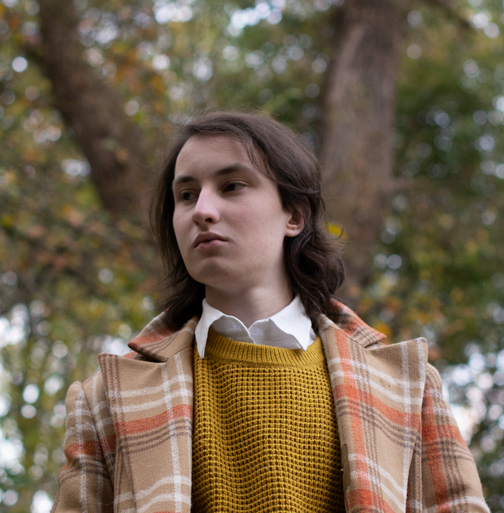

Мавряшин Максим
Москва, Россия
20 марта 2005
Желаемая должность
Графический дизайнер
Занятость
Полная, частичная
Формат работы
Офис, удалённо, гибрид
Образование '28
НИЯУ МИФИ
ИИКС, Программная инженерия
Фотограф
Алиса Барсукова
Я Максим. Работаю 5 лет. Отрисовал более 20 проектов.
Много чего умею, посмотрите портфолио. Если понравится, есть ещё личные проекты — там тоже интересно.
Графический дизайнер, поэтому делаю пнгшки и свгшки для маленьких компаний и пдфки для тех, что побольше.
Чаще всего работаю в иллюстраторе и фотошопе. Умею в питон и гит, чтобы ускорять работу и сохранять промежуточные варианты. Иногда анимирую в афтер эффектс и разрабатываю сайты без тильды. Чуть-чуть пользуюсь остальными программами адоб и фонтлабом.
Умею общаться с типографиями и понимаю их процессы. Готовлю макеты так, чтобы всем было удобно: знаю, что такое дипиай и смик, зачем разбирать шрифты и что такое «выпуск под обрез».
На досуге рисую шрифты и плакаты и собираю коллекцию крышечек. Люблю порядок: каждый мой проект, даже самый маленький, лежит в отдельной директории.
Считаю, что хороший дизайн — это удобство, а не красота. Искусством не занимаюсь